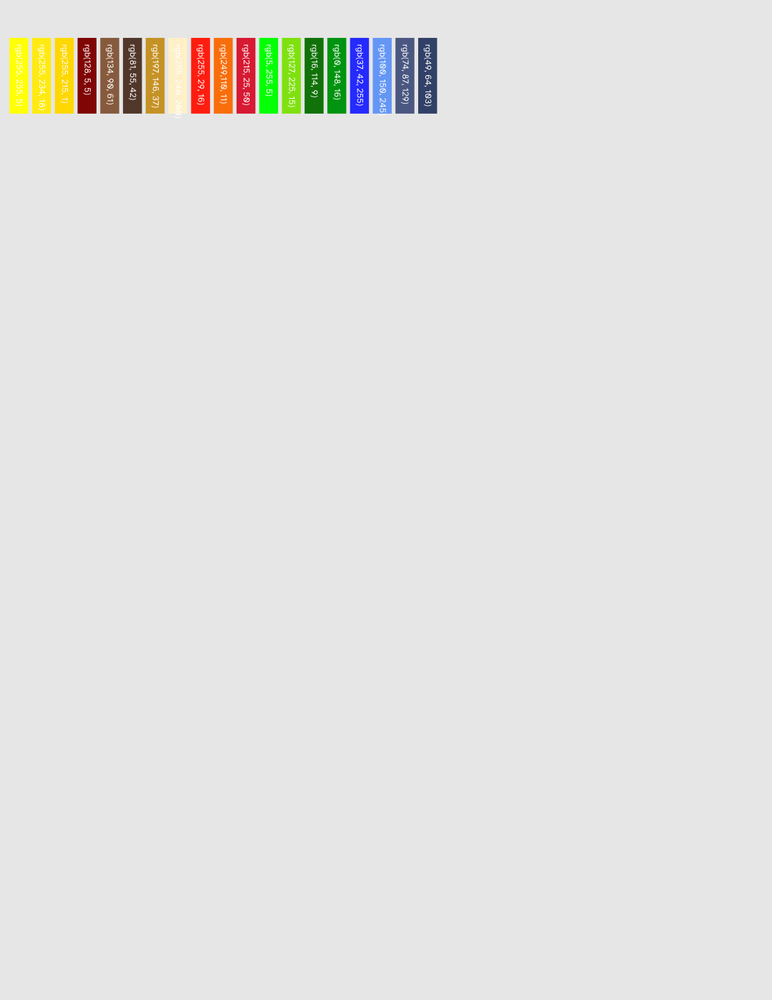
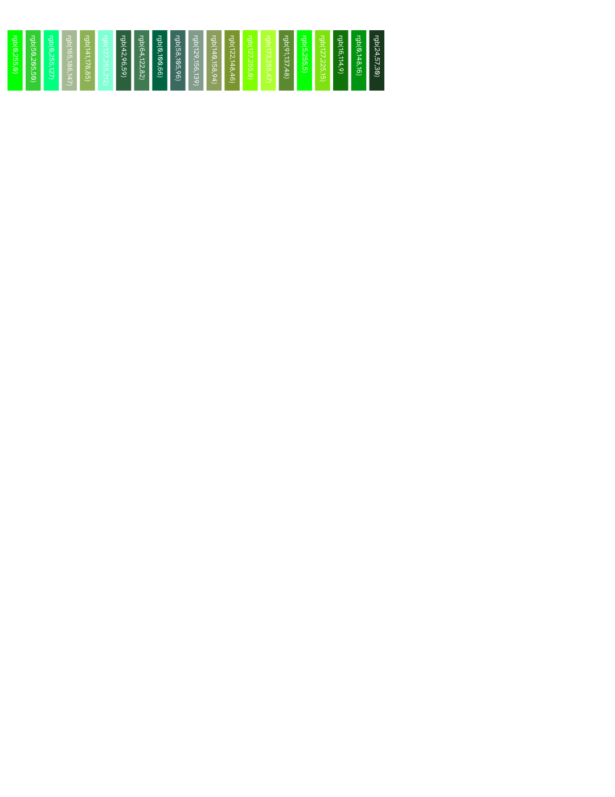
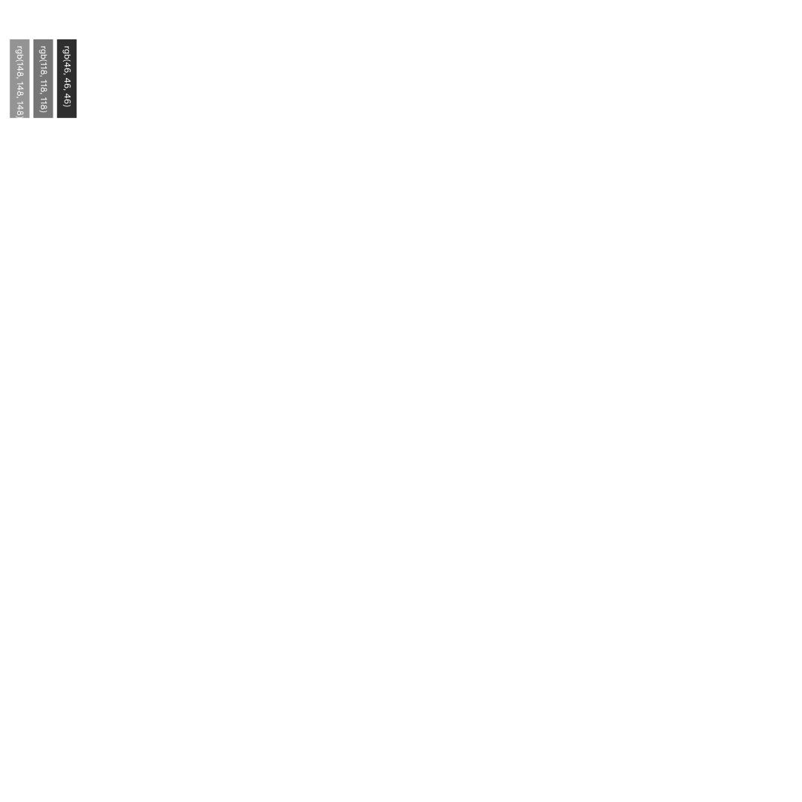
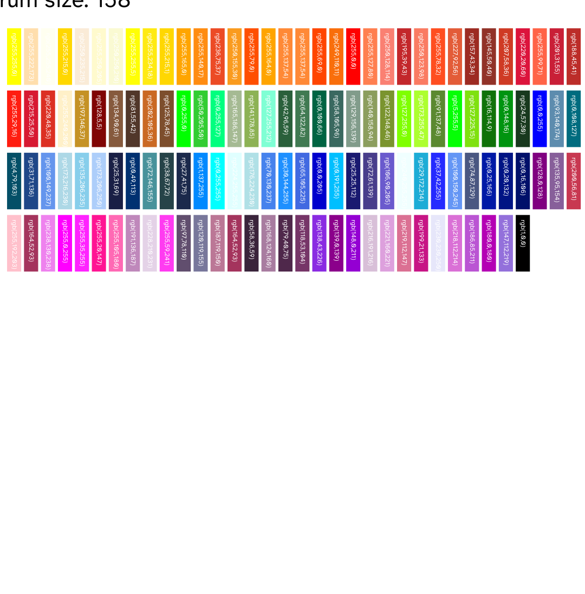
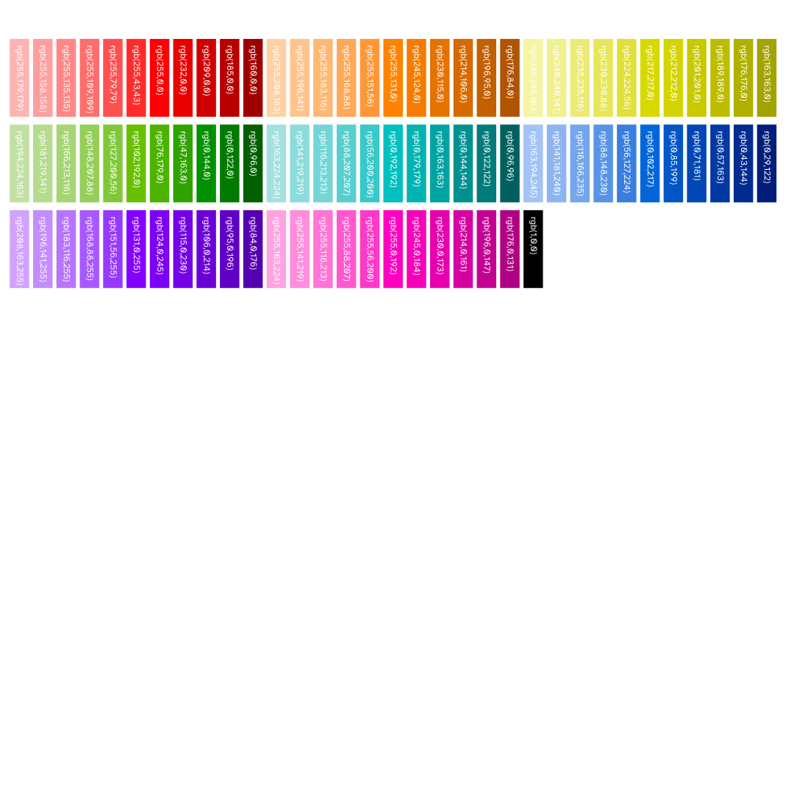
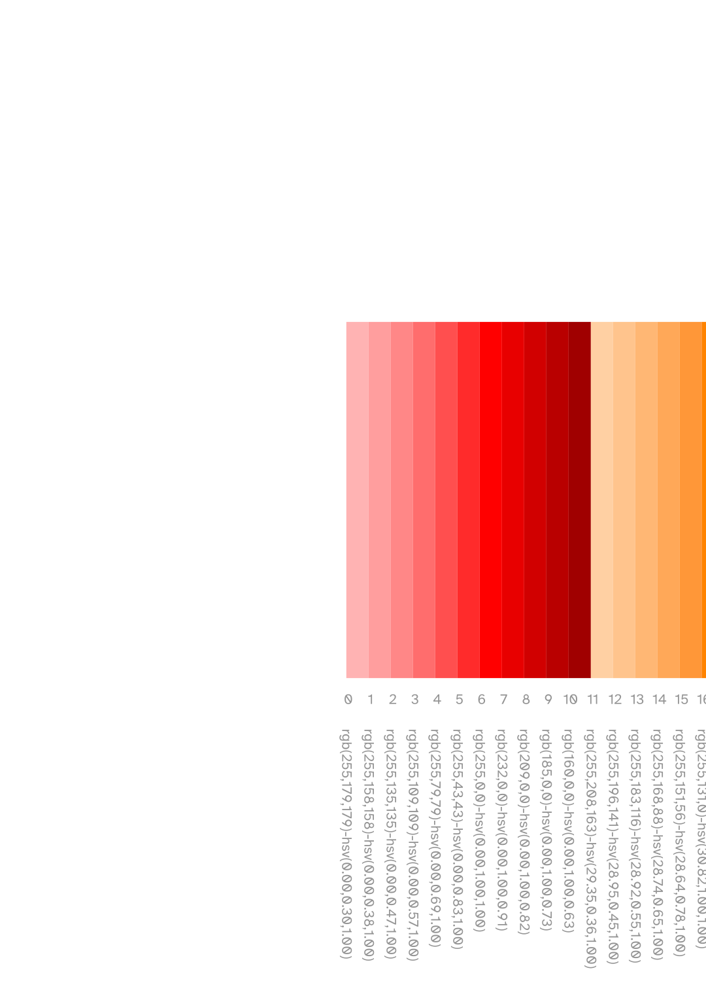
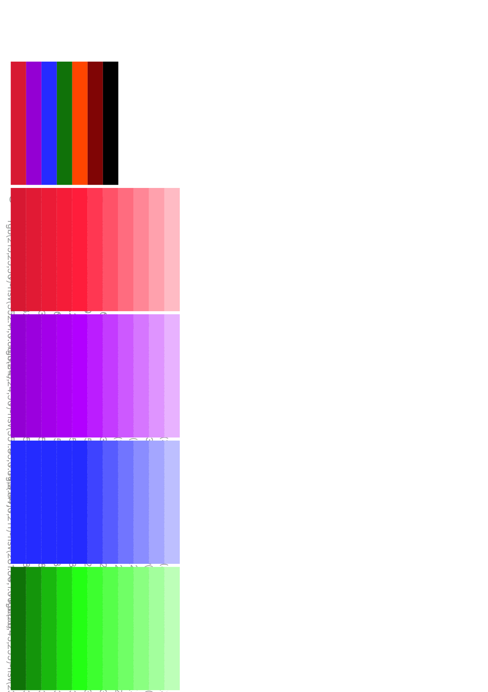
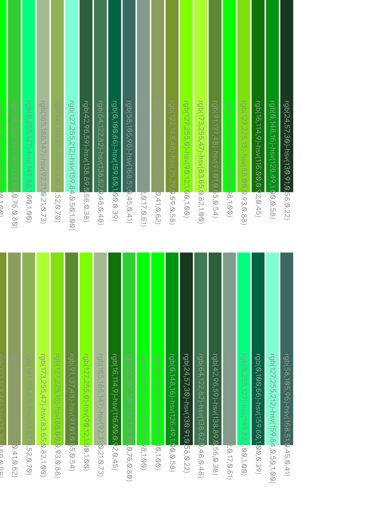
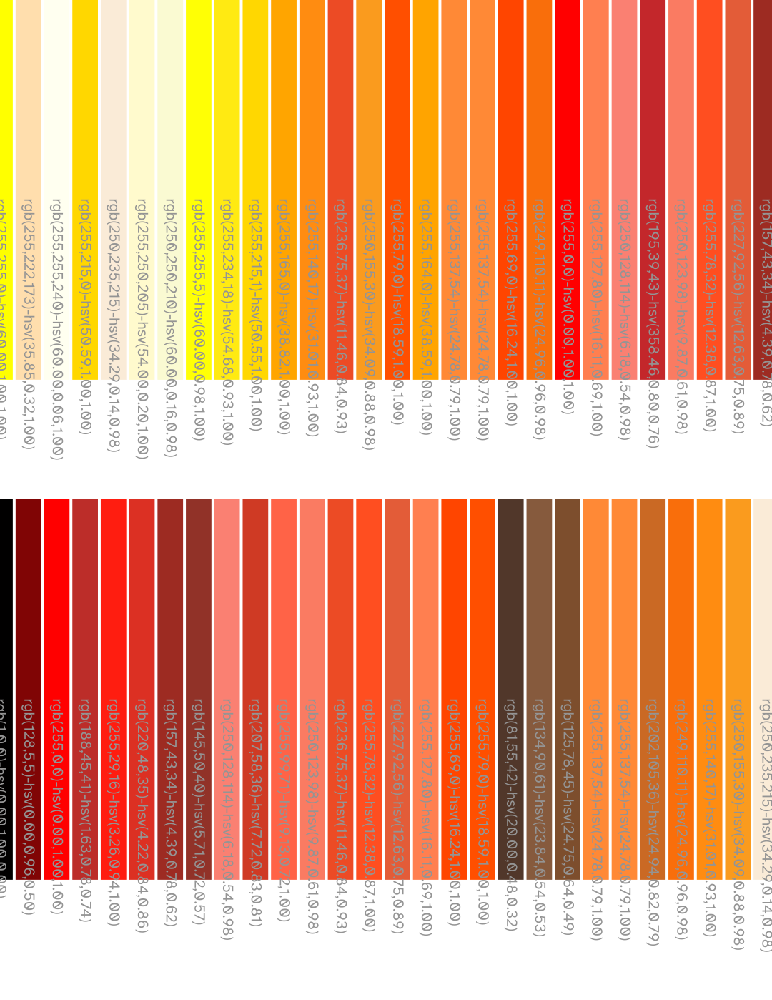
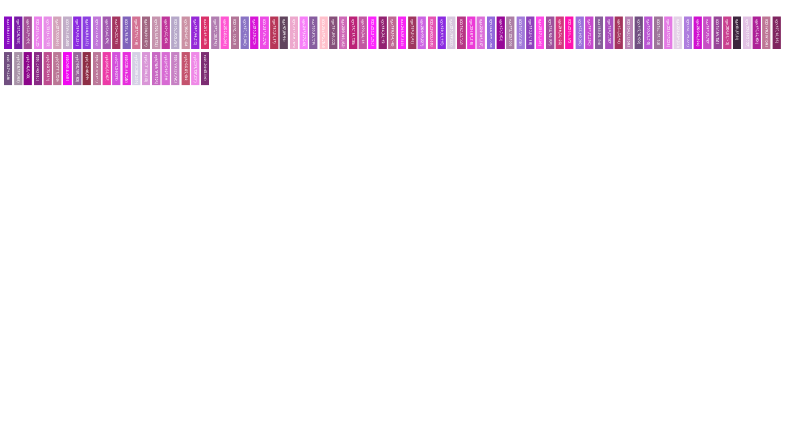

Color Palette Family 20260814
One aggregated entry for the 2026-08-14 izzi color palette family: 15 deterministic swatch-grid artifacts (basic palettes, source palettes, perceptual tints, RGB↔HSV grids, band sweeps). Open the index to reach each individual review page.
Izzi generation commit: 069fbc3618d677e272af27b37842e6e1340ae345 · 15 passes
-
Color palette 1 — black/white basics
Two-swatch baseline (color::black, color::white) from the izzi color family.
-

Color palette 2 — 19-swatch grid
19-swatch palette grid with RGB labels from the izzi color family.
-

Color palette 3 — green band walk
21-swatch green band walk rendered through color_cursor from the izzi color family.
-

Color palette 4 — WCAG gray trio
Three-swatch WCAG gray ramp (lgray/gray/dgray) from the izzi color family.
-

Color palette 5 — active spectrum
133-swatch active-spectrum grid from the izzi color family.
-

Color palette — CIECAM02 (73)
CIECAM02-UCS 73-swatch palette plus hue-sorted variant from the izzi color family.
-

Color palette — CIECAM16 J=70 (89)
CIECAM16-UCS 89-swatch palette at fixed lightness J=70 plus sorted variant.
-

Color palette — ColorBrewer 2.0
ColorBrewer 2.0 3-class and 9-class sequential grids from the izzi color family.
-

Color palette — izzi full (154)
Full 154-swatch izzi palette, unsorted and hue-sorted variants.
-

Color palette — Japanese (118)
118-swatch Japanese palette, unsorted and sorted variants from the izzi color family.
-

Color tint — perceptual 1 (35)
35-swatch perceptual tint exercise (ciecam16j70-derived interpolation).
-

Color tint — perceptual 2 (84)
84-swatch perceptual tint exercise from the izzi color family.
-

RGB↔HSV grid 2 (42)
42-swatch RGB↔HSV quantization grid from the izzi color family.
-

RGB↔HSV grid 3 (266)
266-swatch RGB↔HSV quantization grid from the izzi color family.
-

Color band — expand to larger (100)
Three 100-swatch band sweeps (orange/purple/red) in the RGB model, deterministic seeded generation (M0-DETERMINISM-001 closed).